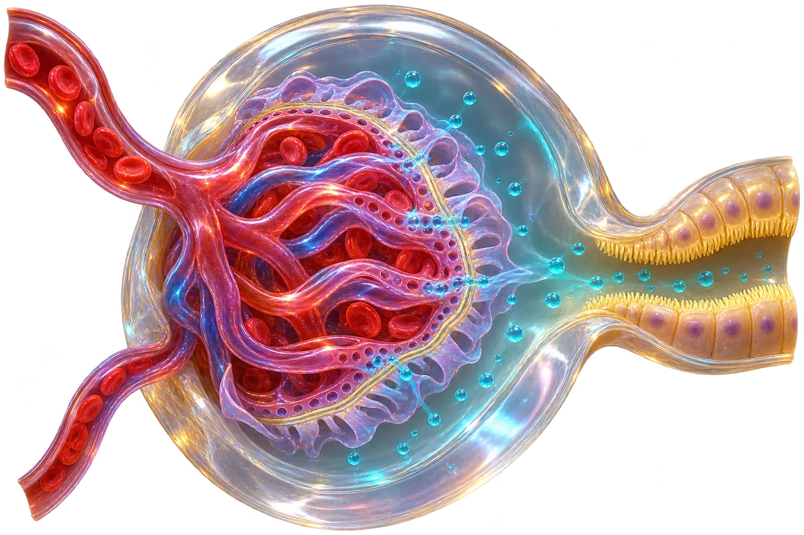

GLOMÉRULO · FILTRAÇÃO

🩸 Sangue ⟶ 💧 Filtrado
AMOSTRAS PARA INVESTIGAÇÃO
Segure uma molécula, arraste e solte no destino correto.
✦
Arraste com o dedo. Cada acerto rende 5 moedas.
0 de 6 moléculas
 0
0
Segure uma molécula, arraste e solte no destino correto.